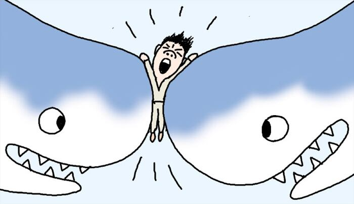
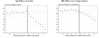
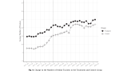
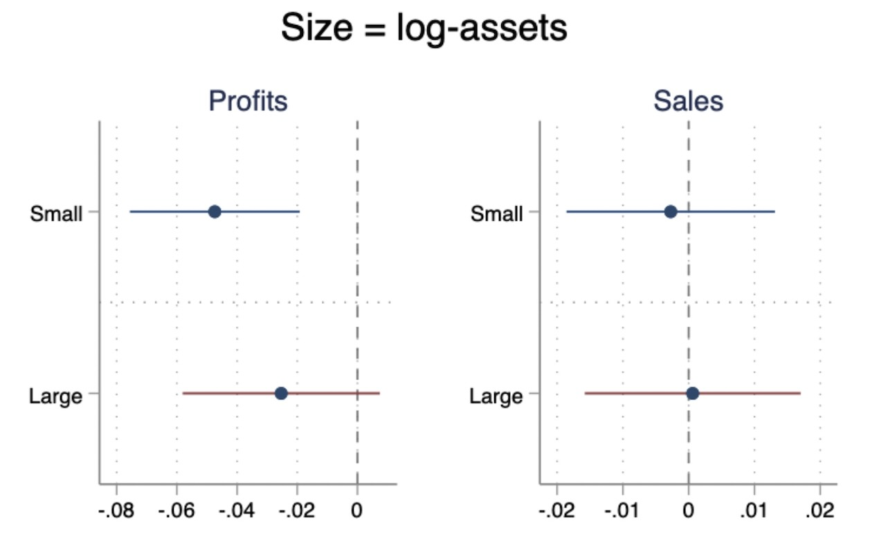
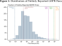
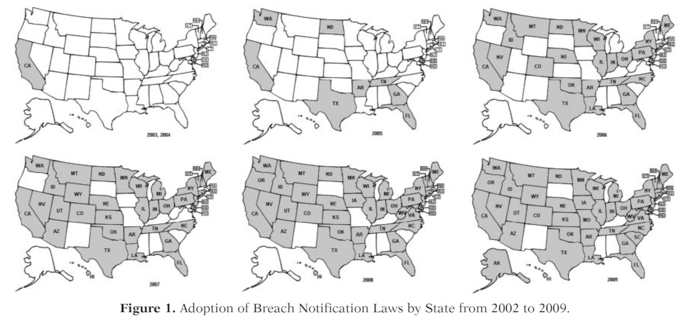

Week 8: Privacy Policies, Incomplete Contracts, and Power
DSAN 5450: Data Ethics and Policy
Spring 2026, Georgetown University
Privacy Regulations, Privacy Policies, and You
\[ \DeclareMathOperator*{\argmax}{argmax} \DeclareMathOperator*{\argmin}{argmin} \newcommand{\bigexp}[1]{\exp\mkern-4mu\left[ #1 \right]} \newcommand{\bigexpect}[1]{\mathbb{E}\mkern-4mu \left[ #1 \right]} \newcommand{\definedas}{\overset{\small\text{def}}{=}} \newcommand{\definedalign}{\overset{\phantom{\text{defn}}}{=}} \newcommand{\eqeventual}{\overset{\text{eventually}}{=}} \newcommand{\Err}{\text{Err}} \newcommand{\expect}[1]{\mathbb{E}[#1]} \newcommand{\expectsq}[1]{\mathbb{E}^2[#1]} \newcommand{\fw}[1]{\texttt{#1}} \newcommand{\given}{\mid} \newcommand{\green}[1]{\color{green}{#1}} \newcommand{\heads}{\outcome{heads}} \newcommand{\iid}{\overset{\text{\small{iid}}}{\sim}} \newcommand{\lik}{\mathcal{L}} \newcommand{\loglik}{\ell} \DeclareMathOperator*{\maximize}{maximize} \DeclareMathOperator*{\minimize}{minimize} \newcommand{\mle}{\textsf{ML}} \newcommand{\nimplies}{\;\not\!\!\!\!\implies} \newcommand{\orange}[1]{\color{orange}{#1}} \newcommand{\outcome}[1]{\textsf{#1}} \newcommand{\param}[1]{{\color{purple} #1}} \newcommand{\pgsamplespace}{\{\green{1},\green{2},\green{3},\purp{4},\purp{5},\purp{6}\}} \newcommand{\pedge}[2]{\require{enclose}\enclose{circle}{~{#1}~} \rightarrow \; \enclose{circle}{\kern.01em {#2}~\kern.01em}} \newcommand{\pnode}[1]{\require{enclose}\enclose{circle}{\kern.1em {#1} \kern.1em}} \newcommand{\ponode}[1]{\require{enclose}\enclose{box}[background=lightgray]{{#1}}} \newcommand{\pnodesp}[1]{\require{enclose}\enclose{circle}{~{#1}~}} \newcommand{\purp}[1]{\color{purple}{#1}} \newcommand{\sign}{\text{Sign}} \newcommand{\spacecap}{\; \cap \;} \newcommand{\spacewedge}{\; \wedge \;} \newcommand{\tails}{\outcome{tails}} \newcommand{\Var}[1]{\text{Var}[#1]} \newcommand{\bigVar}[1]{\text{Var}\mkern-4mu \left[ #1 \right]} \]

Regulations: Comparative Perspective
- No single, “universal” data privacy law \(\implies\) compare and contrast various country/state/org attempts to tackle data policy issues
- Important to retain descriptive/normative distinction! They’ll become harder to distinguish as we discuss:
- What are the regulations currently in existence? (Descriptive)
- Do we see a trend? (California Effect vs. Delaware Effect)
- What are their drawbacks? (Normative)
- Fundamental problem of contracts
- Which drawbacks could be addressed “easily” via policy? (requires understanding processes of policy formation)
- Which ones could not? (Prisoner’s Dilemma!)
Present-Day Policy Framework: Notice and Consent
OECD 1980 \(\rightarrow\) EU 1995 \(\rightarrow\) GDPR 2018
OECD Guidelines, 1980
- “The basis for most modern privacy laws” (Sugimoto et al. 2016)
- Collection Limitation Principle: data may be collected “where appropriate, with the knowledge or consent of the data subject.” (OECD 1980, 14)
- Use Limitation Principle: “Personal data should not be disclosed, made available or otherwise used for purposes other than those specified [at time of collection] except with the consent of the data subject” (OECD 1980, 15)
EU Data Protection Directive, 1995
- Art. 7: Processing allowed when “the data subject has unambiguously given his [sic] consent.”
- Art. 8: Use of sensitive data is restricted, except where “the data subject has given his [sic] explicit consent to the processing of those data.”
- Art. 26: Prohibits export of personal data to non-Euro countries lacking “adequate data protection”, except when “the data subject has given his [sic] consent unambiguously to the proposed transfer” (Directive 95/46/EC of the European Parliament and of the Council of 24 October 1995 on the Protection of Individuals with Regard to the Processing of Personal Data and on the Free Movement of Such Data 1995)
- Superceded by GDPR in 2018
EU General Data Protection Regulation (GDPR), 2018
Effects of GDPR…

- Need to be careful about interpretation!
- Could be due to less tracking, could also be due to monopolization
Effects of GDPR: Effect on Who?
Consumers: Reduced tracking
The GDPR lowered the average number of trackers by about four trackers per publisher

Firms: Harsher impact on small firms
Despite data minimization successes, GDPR had the unintended consequence of increasing relative concentration

Distributional Effects

Going Beyond Just GDPR…
Easy Mode: Policy Diffusion

(Policy Diffusion Curve!)
Hard Mode: Impact of Policy Diffusion
Result (Note the explicitly-identified independent \(\rightarrow\) dependent vars!):
Dep Var: log(idtheft) |
Basic | Basic + Controls |
|---|---|---|
hasLaw |
–0.050* (0.026) |
–0.061*** (0.023) |
| Income per capita | 0.000 (0.000) |
|
| Unemployment rate | 0.003 (0.010) |
|
| Log(population) | –0.268 (0.343) |
|
| State and time fixed effects | Y | Y |
| Constant | 6.852*** (0.014) |
11.248** (5.317) |
| R-squared | 0.848 | 0.850 |
| ***: \(p < 0.01\) | **: \(p < 0.05\) | *: \(p < 0.1\) |